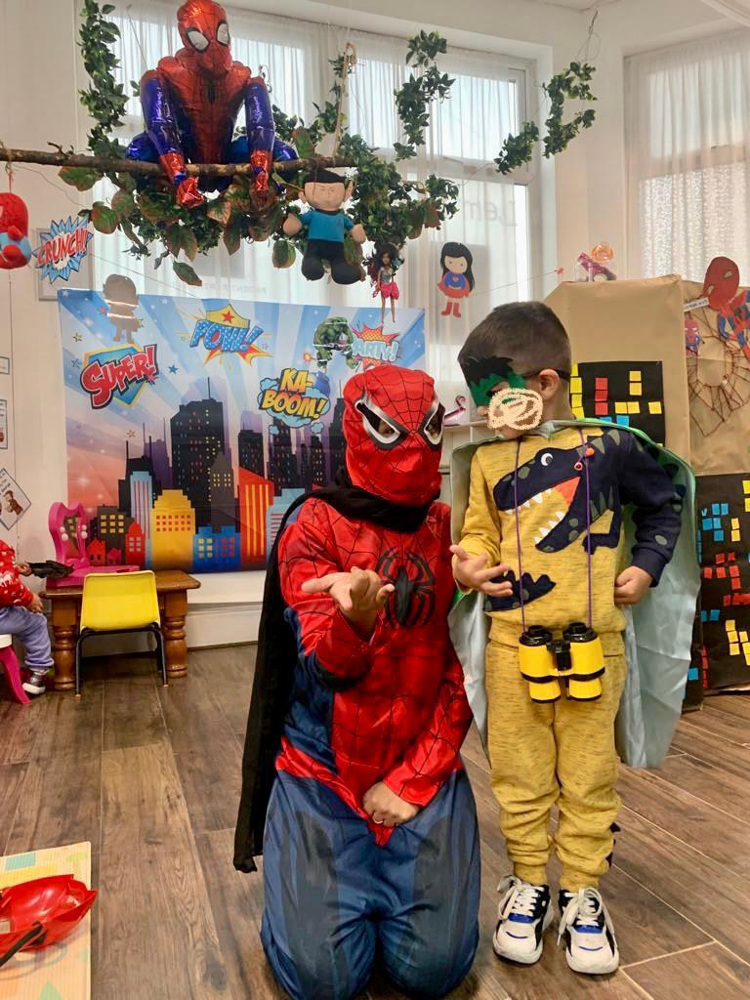
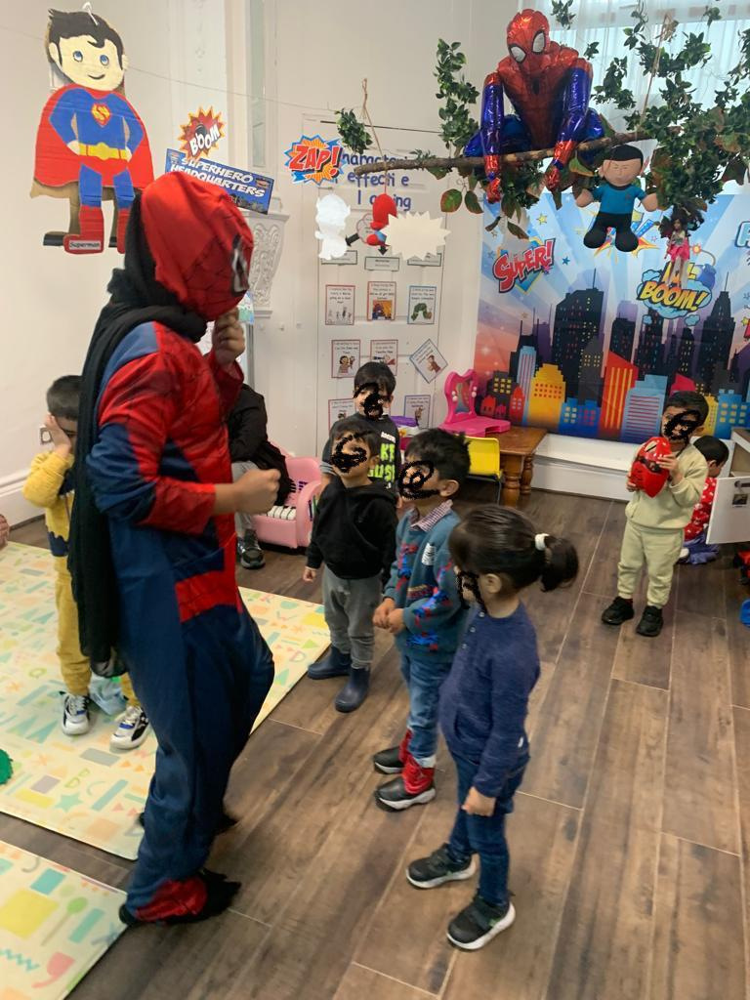

Deciding how long your child should attend preschool each day can feel puzzling. You want them to benefit from social learning and structured play without overtiring them. In the UK, preschool hours vary by age, programme type, and funding options. Understanding what other parents and experts consider reasonable helps you make a choice that suits your child and family life.
In this guide, you’ll find clear answers on preschool hours in the UK, how full-time and part-time preschool differ, and what most families actually do. For more about our approach to learning, see our Curriculum page, where we detail daily activities and learning outcomes.
Understanding Preschool Hours in the UK
Preschool settings, nurseries, and early years providers have different daily routines. Some stay 2 to 3 hours a day, while others offer 8 hours or more. This depends on the setting, the ages involved, and how many days per week you choose.
Many nurseries operate from 8 am to 6 pm, though funded sessions can be shorter. Parents often need to check exactly what times their provider offers because this affects funding and fees.
In England, all 3 and 4-year-olds are entitled to 15 hours of free early education per week during term time, usually spread across three or five days. Eligible working parents can get up to 30 funded hours per week.
To see how we support children starting, visit our Starting Nursery page with tips for smooth transitions.
Full-Time vs Part-Time Preschool: What’s Right for Your Child?
Parents often ask, “Are part-time preschool hours enough for my toddler?” The answer depends on your family’s needs and your child’s personality. Part-time attendance, such as morning sessions three days a week, can be gentler for very young children adjusting to group care. Some toddlers benefit from shorter sessions where they can build confidence slowly before moving to longer days.
Full-time preschool, usually 6 to 8 hours per day, supports children who thrive on routine and social interaction. It helps them practise skills like turn-taking, concentration, and group play. If your child seems tired or overwhelmed, though, a shorter day might be more suitable.
Read more about our Sessions & Fees to explore part-time and full-time options.
Ideal Daily Duration for Different Age Groups
Recommended Hours for 2-Year-Olds
Two-year-olds often have shorter attention spans. Most nurseries recommend 2 to 4 hours initially, gradually increasing as your child adjusts. For example, starting with morning sessions and later extending to afternoons helps toddlers settle comfortably. Learn about our Key Persons system, which observes each child closely to personalise care.
Recommended Hours for 3–4-Year-Olds
By age three, children can usually manage longer sessions of 4 to 6 hours per day. Structured preschool daily routines mix active play, storytelling, and rest, which maintains engagement without fatigue. Check out our Daily Routine page for a sample day.
Factors That Influence Readiness
Temperament, sleep patterns, and prior group experience affect readiness. Observing how your child behaves before and after sessions tells you whether the hours are suitable. Visit our Policy Statements for guidance on attendance and wellbeing.
Balancing Learning, Play, and Rest
A well-balanced preschool day combines learning with play and rest. Breaks and free play are essential for motivation and social skill development. Too many extended hours without downtime can lead to fatigue, irritability, and reduced engagement.
After preschool, quiet time, snacks, and relaxed home play reinforce the routine. For insight into our safety and care approach, see Health & Safety, ensuring children remain happy and secure.



How to Adjust Hours as Your Child Grows
As children become confident, gradually increasing attendance supports social and emotional development. Signs your child is thriving include excitement about preschool, smooth transitions, and willingness to join group activities.
Communicating with teachers is vital. At Lemon Tree, our Staff help parents monitor adjustment and suggest changes.
Part-Time vs Full-Time Preschool Hours: Quick Comparison
|
Feature |
Part-Time Preschool |
Full-Time Preschool |
|
Typical hours/day |
2.5–4 |
6–8 |
|
Best for |
Toddlers and nervous starters |
Children settled with routines |
|
Flexibility |
High |
Lower |
|
Funding use |
Funded blocks |
Funded plus extra paid hours |
|
Parental preference |
Balances home time |
Supports working schedules |
Conclusion
There’s no single answer for preschool hours, but knowing your child’s temperament and UK funding options helps you make an informed decision. Whether part-time mornings or full-time days, the goal is to balance learning, play, and rest. Learn more about our unique environment on our About Us page or check our Gallery to see children thriving.
FAQs
How many hours should a 2-year-old attend preschool in the UK?
Most 2-year-olds do best starting with shorter sessions of around 2 to 4 hours a day. Gradually increasing time helps children settle comfortably while avoiding tiredness or overwhelm.
Can I switch my child from part-time to full-time preschool?
Yes, many nurseries allow children to move from part-time to full-time when they are ready. Changes are usually made gradually, based on how well the child copes with longer days.
Do preschool hours affect early learning outcomes?
Preschool hours can support learning when time is spent in a nurturing, well-structured environment. Quality interactions, play-based learning, and routine matter more than simply staying longer.
Are there government-funded preschool hour limits in the UK?
In England, all 3 and 4-year-olds are entitled to 15 funded hours per week during term time. Eligible working families may receive up to 30 funded hours, depending on circumstances.
What is the best way to handle long preschool days for young children?
Start with shorter sessions and increase hours slowly as your child adjusts. A calm morning routine and relaxed time at home afterward can help children cope better with longer days.